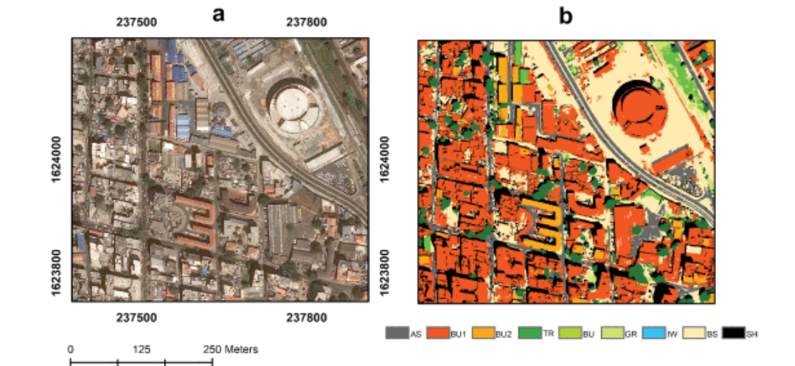
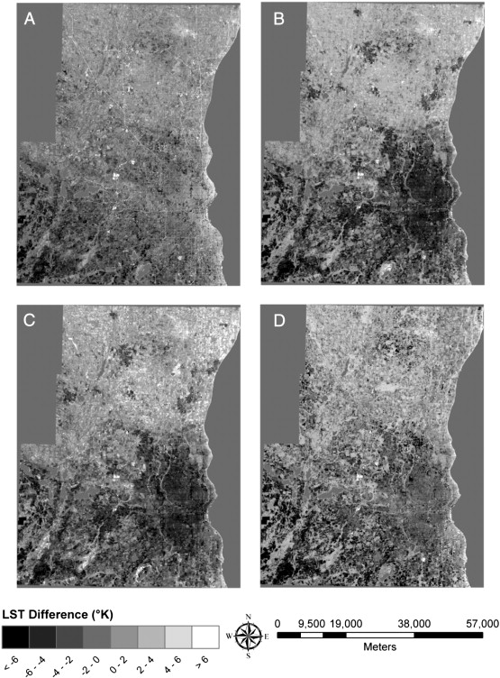

8 Classification II
8.1 Summary
8.1.1 Introduction to Classification Units
Remote sensing classification begins with the fundamental question of what constitutes the basic unit of analysis. Four key units are objects, pixels, mixels (mixed pixels), and mixed objects. Each represents a different approach to how we segment and analyze Earth Observation (EO) data. Pixels are the traditional unit, representing fixed grid cells, while objects are homogeneous regions that may contain multiple pixels. Mixels contain multiple land cover types within a single pixel, creating classification challenges, while mixed objects represent regions with heterogeneous characteristics. The choice of unit significantly impacts classification outcomes and accuracy.
8.1.2 Classification Accuracy Assessment
Three primary methods are presented for assessing classification accuracy: - Testing outputs with new datasets - Training/splitting training data - Cross-validation
When test data is available, accuracy can be quantified through error matrices (confusion matrices) and Kappa coefficients. Error matrices compare predicted classes against reference data, revealing commission errors (false positives) and omission errors (false negatives). The Kappa coefficient measures agreement between classification and reference data while accounting for chance agreement. These metrics provide standardized ways to evaluate classification performance across different models and datasets.
8.1.3 Spatial Autocorrelation Challenges
A critical issue in remote sensing classification is spatial autocorrelation - the tendency for nearby observations to be more similar than distant ones. This phenomenon violates the independence assumption in many statistical models and can lead to overly optimistic accuracy assessments. The lecture presents two approaches to address this challenge: - Object-Based Image Analysis (OBIA) - Spatial cross-validation
Spatial cross-validation specifically addresses this by ensuring training and validation data are spatially separated, providing more realistic accuracy assessments than random sampling approaches.
8.1.4 Advanced Classification Methods
8.1.4.1 Object-Based Image Analysis (OBIA)
OBIA represents a paradigm shift from pixel-based approaches by segmenting images into homogeneous objects before classification. This approach: - Considers spectral, spatial, textural, and contextual information - Mimics human visual interpretation processes - Better captures real-world entities like buildings, fields, and forest stands
The segmentation process creates objects based on spectral similarity, shape parameters, and scale factors, allowing for multi-scale analysis that can detect features at different levels of detail.
8.1.4.2 Sub-pixel Classification
This technique addresses the mixed pixel problem by determining the proportional coverage of different land cover types within individual pixels. Methods include: - Spectral Mixture Analysis (SMA): Identifies “pure” spectral signatures (endmembers) and calculates their fractional abundance in each pixel
8.2 Applications
Object-based classification has gained significant traction in urban remote sensing applications due to its ability to better delineate complex urban features.
Georganos(2018) demonstrated the effectiveness of combining OBIA with machine learning, specifically Extreme Gradient Boosting (XGBoost), for very high-resolution urban land use and land cover classification. Their study showed that incorporating contextual information and morphological attributes significantly improved classification accuracy in heterogeneous urban landscapes. This approach is particularly valuable for mapping urban environments with complex and diverse land use patterns.

Sub-pixel classification has proven valuable for monitoring urban vegetation and impervious surface dynamics. Deng(2013) applied spectral mixture analysis to quantify urban vegetation abundance in Milwaukee, Wisconsin, demonstrating how this approach can detect subtle changes in urban greenness that traditional binary classifications would miss. Their study revealed that vegetation fraction maps derived from spectral unmixing correlated strongly with field measurements (R² = 0.87) and provided more nuanced information about urban ecological conditions than conventional NDVI thresholding. These applications highlight how advanced classification methods can enhance our understanding of complex urban environments by capturing gradual transitions and mixed land cover types that characterize cities.

8.3 Reflection
The advanced classification methods covered this week represent a significant evolution in remote sensing analysis, moving beyond the limitations of traditional pixel-based approaches. What I found particularly interesting was how these techniques attempt to bridge the gap between computational classification and human visual interpretation. I must admit that this week’s content felt particularly challenging. The mathematical concepts behind spectral unmixing and the numerous parameters involved in OBIA segmentation were initially overwhelming. During the practical, I struggled with selecting appropriate endmembers and understanding the error metrics in spectral unmixing. The transition from the relatively straightforward pixel-based classification to these more sophisticated methods represented a steep learning curve that required me to revisit concepts multiple times.
These approaches seem especially relevant for my interest in urban sustainability monitoring, where the complex mosaic of built environments, vegetation, and impervious surfaces requires nuanced analysis beyond binary classifications. However, I recognize that implementing these methods involves trade-offs - OBIA demands more computational resources and parameter tuning, while sub-pixel classification requires careful endmember selection. Moving forward, I’m keen to explore how these advanced classification techniques could be combined with time-series analysis to monitor gradual urban changes and potentially integrate with policy frameworks for sustainable urban development.